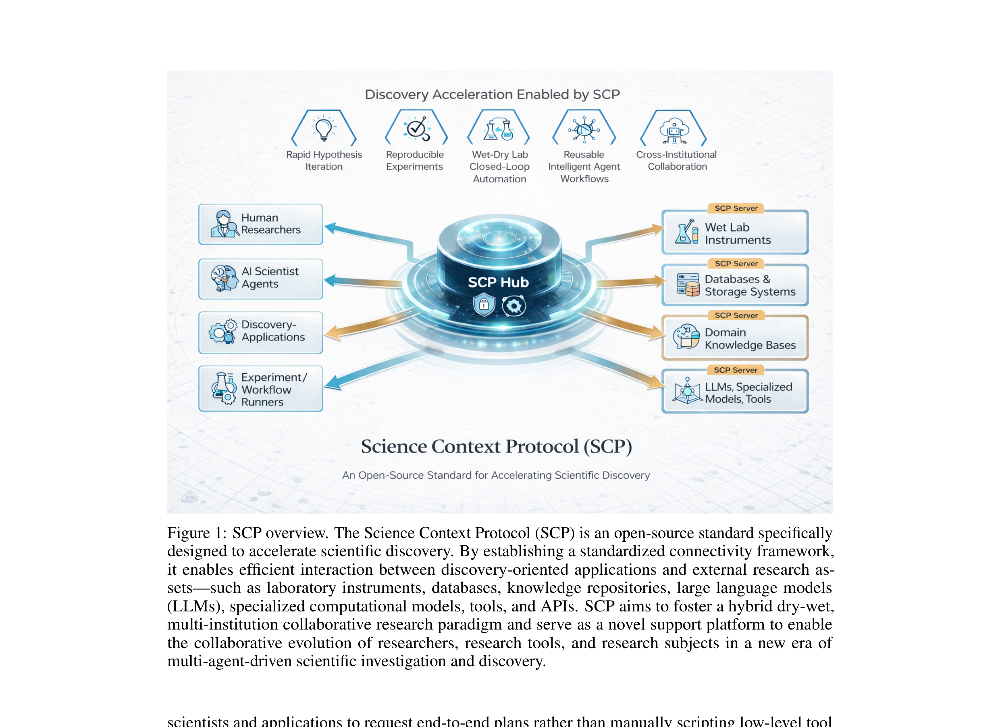
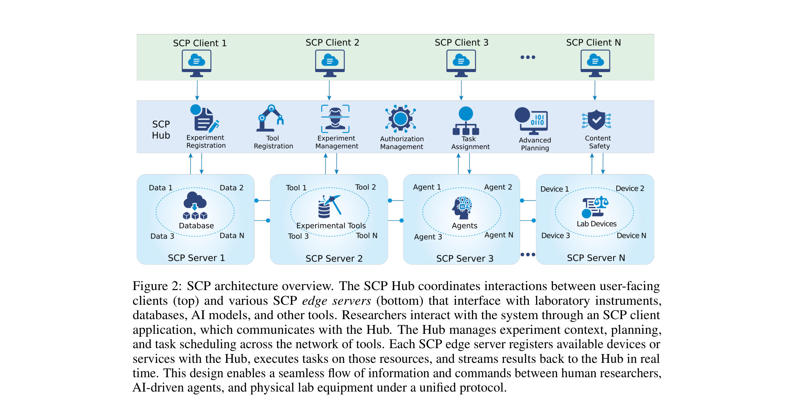
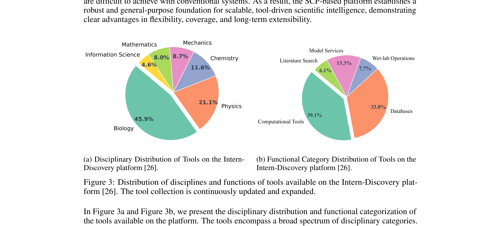

Science Context Protocol (SCP)：给科学 agent 装上一层「实验编排协议」
SCP: Accelerating Discovery with a Global Web of Autonomous Scientific Agents
⓪领域背景速补（写给只懂 LLM/agent、不懂实验室自动化的人）
这篇论文的「难」不在 ML，而在它要把 AI agent 接到真实的科研世界——又是数据库、又是计算模型、又是会动的机器人和真实试剂。下面先把几个关键概念讲清楚，否则很难看懂 SCP 在跟谁较劲。
autonomous science / self-driving lab（自动驾驶实验室）是什么
这是过去几年 AI for Science（AI4S）里最热的方向之一：让一套系统自己提出假设 → 设计实验 → 操作仪器做实验 → 读结果 → 调整下一轮，把人从「闭环实验」里解放出来。论文里反复引用的几个标杆：
- A-Lab（材料合成）：连续运行 17 天，自主合成了目标 58 个无机化合物中的 41 个——一个完全无人值守的「自动炼丹炉」。
- ChemCrow / Coscientist：给 LLM 配上十几个化学专用工具，让它自己规划并执行有机合成。
- OriGene（生物，文中拼作 Origene）、EarthLink（地球科学）、InternAgent（多 agent 科研编排）、Agent Laboratory / Kosmos（端到端科研流水线）。
这些系统都很强，但论文的核心吐槽是：每一个都是「定制化、深度耦合、换个实验室就跑不动」的烟囱。没有一层公共的协议，让不同实验室、不同工具、不同 agent 能互相对话。SCP 想做的就是这层「协议地基」。
为什么「让 agent 接科学仪器/上下文」特别难
- 异构（heterogeneous）资源：一个实验可能要同时调用云端数据库、本地 GPU 上的模型、远程 HPC 集群的仿真、以及实验室里一台真实的移液机器人。它们的接口、单位、协议天差地别。
- dry-wet 混合：dry = 干实验（纯计算/仿真），wet = 湿实验（真实试剂、真实仪器）。湿实验有物理副作用、不可逆、有安全风险、要排他占用设备，这和「调一个无状态 API」完全是两码事。
- 需要持久上下文 + provenance：科学讲究可复现。每一步「做了什么、用了什么参数、谁批准的」都得记下来，否则结果没法被同行信任或重跑。
- 跨机构权限：A 实验室的 agent 想用 B 实验室的仪器，得有鉴权、配额、数据边界——不能谁都随便调别人的质谱仪。
读懂 SCP 必须先认识的几个协议（它的「参照系」）
| 协议 | 是什么 | 和 SCP 的关系 |
|---|---|---|
| MCP（Model Context Protocol） | Anthropic 2024 年提出的开放标准，定义 LLM/agent 如何用统一的 client-server、JSON-RPC 方式调用外部工具与数据源。已成事实标准。 | SCP 的地基。SCP 自称「在 MCP 之上」，沿用它的 client-server 消息模型，再往上加科学专用的语法。 |
| A2A（Agent-to-Agent） | Google 提出的 agent 之间直接通信的协议，补 MCP「只管 agent↔工具、不管 agent↔agent」的空缺。 | SCP 把多 agent 协调收进 Hub 来做，相当于用「中心编排」替代 A2A 的「点对点对话」。 |
| LAP（Agent-to-Instrument Protocol，arXiv 2606.03755） | 同期另一套「agent 接仪器」协议，走去中心化 peer-to-peer，引入 InstrumentCard（签名的能力+物理上限描述）、reservation（排他占用）、safety-fence（危险操作需操作员令牌）、MeasurementResult（带物理单位/校准/不确定度的结果 schema）四个物理世界原语。 | SCP 最直接的对照组。两者解决同一类问题但哲学相反：SCP=中心化 Hub+编排，LAP=去中心化+物理安全原语（详见 ⑤）。 |
| SiLA 2 / OPC-UA | 实验室自动化与工业控制领域的既有工业标准：SiLA 2 用于实验室仪器互联（基于 gRPC），OPC-UA 用于工业设备数据交换。 | 本文未直接对标这两者；它们代表「传统仪器标准化」的路线，SCP 是「LLM-agent 时代」的新一层抽象，理论上可以在 SCP server 内部去封装 SiLA/OPC-UA 设备。 |
一句话定位如果说 MCP 是「agent 的 USB 接口」，那 SCP 想当的是「科学实验的操作系统调度器 + 设备驱动层」：不光定义怎么插工具，还定义怎么编排一整个实验、记账、管权限、驱动真实仪器。
①开源贡献 Open-source Artifacts
SCP 是真开源（Apache-2.0），仓库 InternScience/scp 同时含 spec、Python 参考实现、技能库、Docker 部署与中英文文档。但要注意：开源的是协议 + 平台代码 + 技能封装，没有权重/数据集/可量化的 benchmark——它本质是基础设施而非模型。下表为解读日（2026-06-17）核实结果。
| 类型 | 是否开源 | 内容 / 链接 |
|---|---|---|
| 协议 Spec + 参考实现 | ✔ | github.com/InternScience/scp — Apache-2.0。含 src/scp/ Python 包、pyproject.toml、docker/ 部署、docs/、中文手册 SCP中文手册.md。 |
| 技能库 Skills | ✔ | 仓库 skills/ 目录：README 称 ~206 个科学技能、跨 8 个领域，附可运行 Python 与测试；另有 tutorial for skills.md。 |
| 工具生态平台 | 部分（托管） | Intern-Discovery 平台号称 1,600+ 工具资源；通过托管的 SCP Hub「SCP Square」scphub.intern-ai.org.cn 接入。属于在线托管服务，不是一个可全量下载的工具压缩包。 |
| 模型权重 Weights | ✘ | 不适用：SCP 是协议/编排层，自身不含训练好的模型权重（依赖外部 LLM 作 planner）。 |
| 数据集 Dataset | ✘ | 未发布数据集。 |
| 量化 Benchmark | ✘ | 未提供。论文只有 4 个定性 case study，无标准化评测/对比数字（见 ④）。 |
核实备注GitHub 页脚一度显示「MIT license」，但仓库内 LICENSE 文件与文档一致为 Apache-2.0，以 LICENSE 文件为准。论文末尾明确给出 spec + reference implementation 链接，已核实可访问。
②研究动机与贡献 Motivation & Contribution
背景与问题
autonomous science 正从「单点 demo」走向「基础设施」：A-Lab、ChemCrow、OriGene、InternAgent 这些系统证明了 AI 能闭环做科研。但论文一针见血地指出它们的共同病根——每个系统都是bespoke（定制）、tightly coupled（深度耦合到某个实验室/工作流）、hard-wired（硬连到特定工具）的烟囱：
- 对数据仓库、仿真代码、仪器都暴露 ad-hoc（临时拼凑）接口，组件没法复用、工作流没法跨机构复现；
- 缺一层公共协议，让 AI scientist、agent、面向人的应用能在一个共享、持久、安全的「科学上下文」下，统一访问模型/数据/仪器；
- 已有的工具注册表/编排框架都停在「单个应用」层级，没有协议级的上下文与生命周期抽象；
- 现成标准（明确点名 MCP）解决不了：跨平台共享上下文、管理进行中实验的状态、强制数据访问/权限边界。
本文的切入点
作者的核心判断是：问题不在「缺工具」，而在「缺协议地基」。所以不去再造一个更强的科学 agent，而是去定义一层协议 + 配套服务架构，把「描述资源、调用资源、编排实验、记账鉴权」标准化，让现有的一切（工具、模型、数据、仪器、甚至别的 agent）都变成可被发现、可被调用、可被组合的「SCP Server」。一句话：不卷模型，卷接口与编排。
核心贡献（论文自述的「两大支柱 + 四项扩展」）
- 支柱一 · 统一资源集成（Unified Resource Integration）：一套通用 spec 来「描述 + 调用」科学资源——软件工具、模型、数据集、物理仪器一视同仁，都用同一套 JSON schema 暴露能力、参数、副作用、安全要求。让 agent 能跨平台、跨机构地 discover / call / compose。
- 支柱二 · 编排式实验生命周期管理（Orchestrated Experiment Lifecycle）：配一套安全服务架构 = 中心化 SCP Hub + 联邦式 SCP Servers，管理实验全生命周期（注册 → 规划 → 执行 → 监控 → 归档），强制细粒度鉴权（OAuth2.1），并维护可追溯的端到端工作流。
- 相对 MCP 的四项扩展：① 更丰富的实验元数据（持久 experiment ID、dry/wet/hybrid 类型、目标、数据 URI）；② 中心化 Hub 作为全局注册表（而非纯 P2P）；③ 智能工作流编排（在 agent API 之上加一层 experiment-flow API，从高层目标自动合成 top-k 多步方案）；④ 湿实验室设备集成（标准化设备驱动与能力描述，让真实仪器像计算工具一样可调）。
- 落地平台：基于 SCP 搭建 Intern-Discovery，整合 1,600+ 工具（生物 45.9% / 物理 21.1% / 化学 11.6% / 力学材料 8.7% / 数学 8.0% / 信息科学 4.6%），并开源 spec 与参考实现。
③方法 / 架构 Method & Architecture
SCP 采用「hub-and-spoke（轮辐式）」架构：一个中心 SCP Hub 协调一群分布式 SCP Servers（边缘节点） 和面向用户的 SCP Clients，再加上辅助的消息与存储组件。下图是原文的整体定位图：把人类研究者、AI scientist agents、各种 discovery 应用，统一连到由 wet-lab 仪器 / 数据库 / 知识库 / LLM 与专用模型组成的资源池上。

三类核心组件
SCP Hub —— 系统的「大脑」与协议权威
Hub 维护工具/数据/agent/仪器的全局注册表，负责服务发现、任务派发与追踪，并实现协议级安全治理。它远不止「转发请求」，内嵌一套智能编排层：
- 意图解析 → 候选方案：用 AI 模型把自然语言指令翻译成若干「候选任务图」（涉及工具、数据集、agent、干/湿操作）；
- 方案排序：结合当前环境（可用工具/仪器、数据就绪度、用户权限、资源预算）对候选方案打分，给出 top-k 可执行计划，并附上依赖结构、预估延迟、成本、实验风险等「决策理由」，交给人或更高层 AI scientist 挑选；
- 编译成 workflow spec：选定方案被编译成一张细粒度的 JSON 任务图，每个节点 = 一次具体操作（清洗数据 / 跑仿真 / 执行模型 / 驱动移液机器人），标注 tool ID、输入参数、预期输出、对前序步骤的依赖。这张 JSON 既是 agent↔Server↔仪器之间的合同，也是「计划了什么」的权威记录，会被版本化存进 experiment memory，支持回放、跨次比较、审计；
- 执行—监控—校验—回滚闭环：按依赖顺序派发每一步、回收状态与结果；对数据步做 schema/合理性校验，对物理步检查设备确认与传感器读数；一旦异常（反复报错、输出不一致、资源异常消耗）就触发异常策略——告警、暂停/中止下游、必要时安全回滚。这种 rollback 在多步干湿工作流里尤其关键，因为早期错误会污染后续测量。
此外 Hub 内置 AI governance 模块做冲突检测与资源预测，在工作流过度占用仪器/数据/算力时提前预警；并通过 OAuth2.1 做实验与用户级的鉴权授权。
SCP Servers —— 边缘节点
每个 Server 管理某个环境（实验室 / 数据中心 / 云账号）里的本地资源：仪器、领域模型、数据库、数据处理流水线、乃至更高层的 agent。它把这些资源注册成 SCP tool、用统一 spec 暴露能力与参数 schema、执行本地访问控制。启动时自动向一个或多个 Hub 注册自己导出的工具，并持续上报设备状态/模型就绪度/资源利用率供全局调度。用户也可通过 Intern-Discovery 把自己的 Server 提交进平台统管。
SCP Clients —— 面向人/agent 的接口层
Client 负责对 Hub 鉴权、拉取「当前用户权限+项目上下文下可见」的工具/agent/数据/仪器清单，并提供实验设计与执行界面（简单场景给 catalog 直调，复杂场景给图形/编程式的工作流构建器）。每次调用都携带用户凭证 + experiment ID，使 Hub 能做细粒度访问控制并把动作归因到具体用户/agent——安全与 provenance 始终集中在 Hub，可审计。
下图是原文给出的架构图（已从 PDF 重裁，便于阅读）：顶部是多个 Client，中间 Hub 列出它承担的职能（实验注册 / 工具注册 / 实验管理 / 鉴权管理 / 任务分派 / 高级规划 / 内容安全），底部是各 Server 分别托管数据库、实验工具、agent、实验室设备。

重绘：组件关系（自绘 SVG）
把上面文字凝练成一张「谁连谁、Hub 做什么」的示意图：
一次实验的交互时序（自绘 SVG）
论文把「用 SCP 做一次实验」拆成 5 个阶段：查询设计 → 规划生成 → 选择编排 → 设备执行 → 反馈迭代。下面用时序图重绘这条主链路：
- 协议契约是一张 JSON 任务图：节点=操作，边=依赖；它同时是执行合同与可复现记录，被版本化存档。这是 SCP 相对 MCP「无状态单次调用」最实质的差异。
- 湿实验当一等公民：SCP 定义标准化「设备驱动 + 厂商无关接口」（类比操作系统里的仪器驱动），让 thermocycler / HPLC / 机械臂能像计算工具一样被计划里直接调用，Hub 与 edge server 负责翻译成具体设备命令。
- 开发者扩展方式：写 adapter/driver 把仪器或软件包到 SCP 协议后面（子类化 device 接口或用装饰器把函数注册成 tool action），部署到 edge server 即自动向 Hub 注册——不用动核心。仓库
skills/提供了这类封装的范式与测试。 - planner 依赖外部 LLM：智能编排里的「意图解析 / 计划合成」靠 LLM-based planner 完成，SCP 本身不绑定具体模型。
④落地与评估 Evaluation
先说成熟度这是一份 Technical Report，没有量化 benchmark、没有与 baseline 的对比数字、没有跑分。「评估」由一个工具生态统计 + 四个定性 case study 构成——它在证明「这套协议能把多种资源串起来跑通」，而非「比某基线好多少」。读的时候请把它当「能力演示」而非「实证比较」。
工具生态（Intern-Discovery）
基于 SCP 搭建的平台整合了 1,600+ 工具，覆盖生物/化学数据库检索（UniProt、InterPro、PDB、NCBI）、结构与序列处理、分子建模、数据预处理、数值计算、ML 推理等。分布如下：

四个 Case Study（定性）
| # | 场景 | 展示了什么 |
|---|---|---|
| 1 | 自动化实验方案设计与执行 | 研究者给高层目标（如「设计并跑 PCR 验证基因敲除」）→ Hub 编排 → Thoth Server 生成结构化 JSON 协议（试剂/用量/时序）→ Thoth-OP Server 拆成原子操作并生成设备命令序列 → 派发到仪器 API。展示「目标 → 协议 → 执行」全自动串联。 |
| 2 | 从 PDF 复现已有实验方案 | 上传一篇论文方法段/实验 SOP 的 PDF → Hub 路由到 Thoth 做协议理解 → 把自由文本解析成标准化 JSON protocol 对象（含目标、材料、各步动作/参数/依赖），即便文档是叙述性/异构排版。展示「文献 → 可执行协议」。 |
| 3 | AI 驱动的分子筛选与对接（docking） | 端到端小分子流程：跨多个 SCP 工具完成筛选 + 分子对接。展示纯干实验（computational）的多工具编排。 |
| 4 | 荧光蛋白工程的干湿一体（dry-wet） | 紧耦合的干湿工作流：计算设计 + 湿实验验证联动。展示 SCP 把 in-silico 设计与真实实验闭合成一条工作流。 |
这些 case 共同想说明：无论一步由机器人、AI 模型还是数据流水线执行，在 SCP 里都以一致方式被调用、被同一 experiment context 追踪，从而降低集成开销、提升可复现性。但没有报告成功率、耗时、误差、与人工/基线的对比，所以「到底省了多少、对了多少」论文没给答案。
与 MCP 的对比（论文 Discussion 节，定性论证）
| 维度 | MCP 的不足（作者论点） | SCP 的应对 |
|---|---|---|
| 协议标准化/上下文 | 只标准化基础交互（文件 I/O、函数调用），把交互当孤立消息，无「完整实验」表示，易碎片化 | 内建 JSON 实验 schema：每个实验带 ID、研究者、dry/wet/hybrid 类型、目标、步骤——全生态对协议「同一种理解」 |
| 高通量实验 | 每次调用无状态、无上下文，跑 100 个实验要外部调度与人工追踪，无原生「实验队列」 | 把整条 workflow 当一等对象（带 experiment ID + 持久上下文），可一次提交一批、统一记录与聚合结果 |
| 多 agent 编排 | 面向消息、非原生多 agent，只管 agent↔工具，不管 agent↔agent（需 A2A 补），易退化成点对点散乱对话 | Hub 作为中心 orchestrator：分解目标→派子任务→跟踪依赖与完成状态，支持条件分支/迭代 |
| 湿实验室设备 | 没把实验硬件当设计目标，每台仪器要定制 adapter，无通用「lab action」格式，常退化成「AI 出文本协议、人去手工做」 | 定义标准化设备驱动 + 厂商无关接口，让 thermocycler/HPLC/机械臂在计划里像计算工具一样可调 |
一句话总结这张表论文自己的措辞很到位：「MCP 提供底层的消息管道（the messaging pipes），SCP 在其上加了一层科学实验的语法（a higher-level grammar）」。注意这是定性论证，没有受控实验去量化「SCP 比 MCP-only 快/省多少」。
⑤洞见与局限 Insights & Limitations
- 科学 agent 的瓶颈正从「模型/工具」上移到「协议/编排」。SCP 的赌注是：与其再造一个更强的科学 agent，不如定义一层让所有资源可互操作的协议——这与「不卷模型、卷接口」的判断一致，也呼应了 MCP 在通用 agent 领域走通的路径。
- 「experiment context」是把 MCP 搬进科学的关键缺口。MCP 的调用是无状态、无记忆的；而科学的灵魂是可复现 + provenance。SCP 把「一整个实验」做成持久、版本化、可审计的一等对象（一张 JSON 任务图），这是它最有迁移价值的设计——任何想做「领域版 MCP」的人都该先想清楚自己领域的「持久上下文」长什么样。
- 中心化是把双刃剑。Hub 带来全局编排、统一鉴权、可审计的 provenance（这些在跨机构科研里确实刚需），但也引入单点信任 / 单点故障 / 治理集中。这正是它与去中心化路线最本质的哲学分歧。
局限与未来
- 只有 spec + 定性 demo，缺实证。没有量化 benchmark、成功率、与 baseline 的对比，无法判断 SCP 相对 MCP-only 到底带来多少实际收益，也没有压力/规模化测试数据。
- 湿实验占比仍低（约 7.7%）。尽管「湿实验一等公民」是核心卖点，平台目前实际仍以数据库+计算工具为主；真实仪器接入的广度、稳定性、安全边界尚未充分展示。
- 中心化的代价未充分讨论。论文几乎没正面回应「Hub 单点故障 / 谁来运营这个全球 Hub / 跨机构信任如何建立」这类治理与可用性问题。
- 安全机制偏「访问控制」，缺「物理安全」原语。SCP 有 OAuth2.1 + governance + 内容安全，但对比 LAP，它没有像 InstrumentCard（物理上限）、safety-fence（危险操作的操作员令牌握手）、带不确定度/校准的 MeasurementResult 这类面向物理世界的细粒度安全/计量原语——而这些恰恰是真实湿实验最要命的地方。
与相关工作的关系（重点：SCP vs LAP）
SCP 把自己定位为 A-Lab / ChemCrow / OriGene / InternAgent / Agent Laboratory 这些「单点科学 agent 系统」之上的通用协议地基：那些是「应用」，SCP 是「协议」。而最值得对照的同期工作是 LAP（Agent-to-Instrument Protocol，arXiv 2606.03755）——两者解决同一类问题（让 agent 安全地接科学资源），但哲学几乎相反：
| 维度 | SCP（本文 · 上海 AI Lab） | LAP（agent-to-instrument） |
|---|---|---|
| 拓扑 | 中心化 hub-and-spoke：Hub 是协议权威+编排大脑 | 去中心化 peer-to-peer（承袭 A2A 的 discovery-first），每个实验室是自己仪器的唯一权威 |
| 主打抽象 | experiment context + JSON 任务图 + 实验生命周期编排 | 四个物理世界原语：InstrumentCard / reservation / safety-fence / MeasurementResult |
| 安全模型 | 集中式 OAuth2.1 鉴权 + Hub governance + 内容安全 | 分布式：签名能力卡、排他占用锁、危险操作的操作员令牌握手 |
| 物理单位 / 计量 | 未强调（结果格式较通用） | 一等公民：结果带物理单位、校准锚点、不确定度 |
| 实现 / 落地 | 有：开源参考实现 + 1,600+ 工具的 Intern-Discovery 平台 | 论文未明确给出参考实现（偏协议设计） |
| 谁管「独占/物理风险」 | 靠 Hub 的冲突检测 + 资源预测（集中式预警） | 靠 reservation 锁 + safety-fence 握手（协议原语层面强制） |
粗略归纳：LAP 更去中心化、更重「物理世界安全/计量原语」；SCP 更中心化、更重「编排 + 实验生命周期 + 规模化平台落地」。在「谁有实现」上 SCP 占优（开源 + 1,600+ 工具平台），在「谁把物理单位/独占/危险操作管得更细」上 LAP 设计得更专。两者更像互补而非替代——可以想象一个 SCP Hub 内部用类 LAP 的原语去管真实仪器那一段。